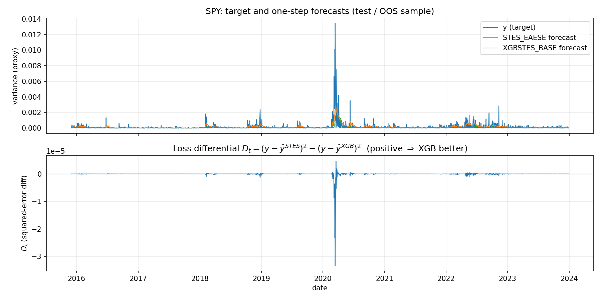
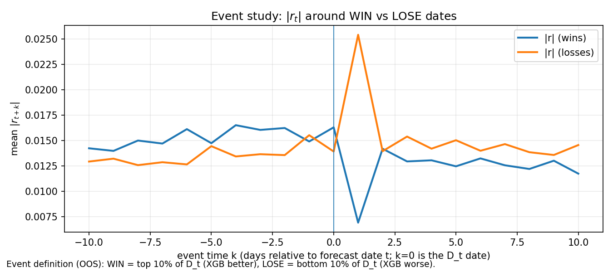
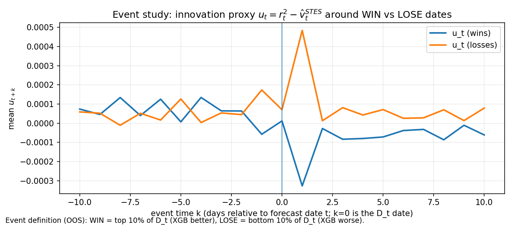
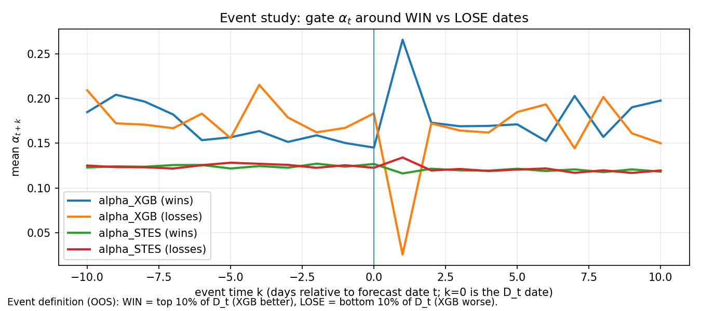
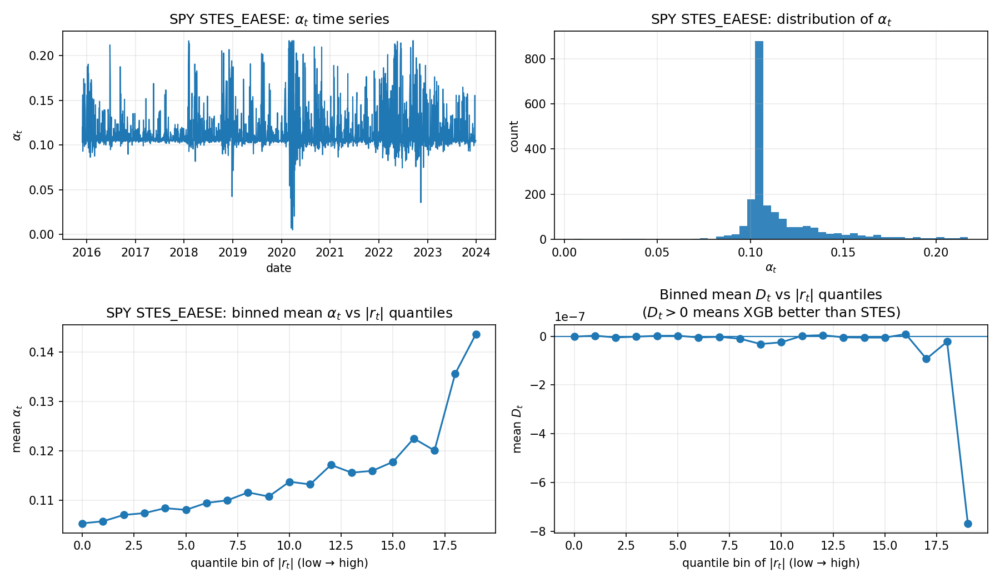
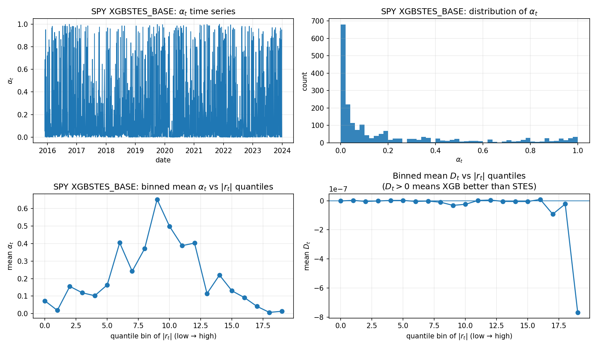
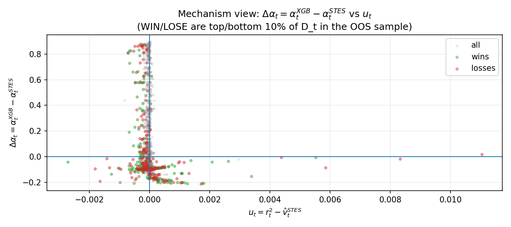
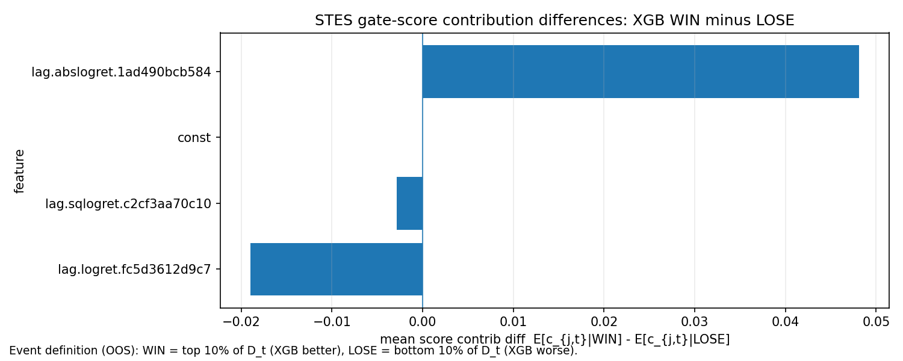

2024-07-18
(Code snippets for this post can be found in the Github repository.)
In the previous post, we replicated the Smooth Transition Exponential Smoothing (STES) model from (Taylor 2004) and (Liu, Taylor, Choo 2020). In a small replication study on SPY returns, STES delivered modest improvements in out-of-sample RMSE relative to simple Exponential Smoothing (ES). Here, we ask a natural follow-up: if we keep the same feature set X_t (lag returns, lag squared returns, and lag absolute returns), can a more flexible gate improve the forecast further?
This post is motivated by (Coulombe 2020), which shows how tree-based models can be used to predict time-varying coefficients in otherwise classical econometric settings. Many traditional models accommodate regimes and nonlinearity via Markov switching, time-varying parameters, or thresholds; Coulombe’s key point is that decision trees can often approximate these regime mappings directly. The paper considers a regression of the form:
\begin{equation} \begin{aligned} y_t &= X_t \beta_t + \epsilon_t \\ \beta_t &= \mathcal{F}(X_t) \\ \end{aligned} \end{equation}
where \mathcal{F} is the customized random forest that maps the features X_t to the coefficients \beta_t. The customized tree model uses a bagging technique appropriate for time-series data and adds temporal smoothness regularization to the predicted \beta_t.
This paper got me interested in replacing the linear equation within the sigmoid function in the STES with a tree ensemble model. Recall that the STES has the following form:
\begin{equation} \begin{aligned} \sigma_t^2 &= \alpha_{t-1} r_{t-1}^2 + (1-\alpha_{t-1})\widehat{\sigma}_{t-1}^2 \\ \alpha_{t-1} &= \mathrm{sigmoid}\left(X_{t-1}^\top\beta\right) \\ \end{aligned} \end{equation}
By replacing the linear equation X^\top\beta with a tree ensemble model, we can perhaps better separate the feature space into regions where recent realized volatility plays a more critical role in forecasting future realized volatility from regions where long-term historical realized volatility is a better forecast. Volatility time series exhibit non-linear behaviour, and several models already use modern machine learning architectures (such as the Neural Network Heterogeneous Autoregressive Model).
The XGBSTES model is formulated as
\begin{equation} \begin{aligned} \sigma_t^2 &= \alpha_{t-1} r_{t-1}^2 + (1-\alpha_{t-1})\widehat{\sigma}_{t-1}^2 \\ \alpha_{t-1} &= \mathrm{sigmoid}\left(\mathcal{F}(X_{t-1})\right) \\ \end{aligned} \end{equation}
We fit the model by minimizing mean squared error (MSE) between the forecasted variance \sigma_t^2 and realized squared returns.
\mathtt{loss} = \frac{1}{T}\sum_{t=1}^{T}\left(r_t^2 - \widehat{\sigma}_t^2\right)^2
For each time step t, the forecasted variance \sigma_t^2 is a weighted combination of the previous period’s squared return r_{t-1}^2 and the previous forecast \widehat{\sigma}_{t-1}^2. The weight \alpha_{t-1} is produced by an XGBoost model applied to the transition variable X_{t-1} and passed through a sigmoid so it lies in (0,1). In other words, we do not predict next-day variance directly; instead, we predict a time-varying update weight and then generate the variance forecast recursively over contiguous blocks of the feature matrix.
Below we discuss how it can be implemented.
When we first implemented XGBSTES, we treated it as a direct drop-in replacement for the linear gate in STES:
\widehat{\sigma}t^2=\alpha_{t-1} r{t-1}^2+(1-\alpha_{t-1})\widehat{\sigma}_{t-1}^2, \qquad \alpha_{t-1}=\mathrm{expit}(f_{t-1}), \qquad f_{t-1}=\mathcal{F}(X_{t-1}),
and we trained the tree model \mathcal{F} by minimizing the same MSE objective used in Part 1:
L=\sum_{t=1}^T\left(y_t-\widehat{\sigma}_t^2\right)^2,\qquad y_t=r_t^2
This approach is tempting because it appears to be a direct drop-in replacement: train the gate to minimize the same forecasting loss used for STES.
However, this implementation is wrong.
It is wrong because there is a structural mismatch between (i) the STES recursion and (ii) how gradient-boosted trees are optimized.
XGBoost’s optimization machinery is designed for objectives that decompose approximately as
L \approx \sum_{t=1}^T \ell_t(y_t,f_{t-1})
so each row t contributes a gradient and Hessian that depends on f_{t-1} locally.
In STES, the prediction at time t-1$ depends on the entire history of gates:
\widehat{\sigma}t^2 = g(\alpha{t-1},\dots,\alpha_1), \qquad \alpha_s=\mathrm{expit}(f_s)
So the true loss is not row-separable:
L = \sum_{t=1}^T \ell_t\left(y_t; f_1,f_2,\dots,f_t\right)
This matters because tree building assumes that splitting row t affects the loss mostly through that row’s own gradient signal. However, here, changing f_t changes the state recursion and can alter many later terms \ell_{t+1},\ell_{t+2},\dots. The objective is effectively coupled sequentially, while the booster is designed for per-row aggregation.
Our previous implementation used this objective function
def stes_variance_objective(self, preds, train):
labels = dtrain.get_label()
alphas = expit(preds)
returns2 = self.data['returns^2'].to_numpy()
grads = np.zeros_like(preds)
hesss = np.zeros_like(preds)
varhs = np.zeros_like(preds)
assert len(preds) == len(labels), "Mismatch between lengths of preds, returns, and labels"
for t in range(len(alphas)):
if t == 0:
lvar_f = np.mean(returns2[:500])
varhs[t] = alphas[t] * returns2[t] + (1 - alphas[t]) * lvar_f
d_alpha = returns2[t] - lvar_f
else:
varhs[t] = alphas[t] * returns2[t] + (1 - alphas[t]) * varhs[t-1]
d_alpha = returns2[t] - varhs[t-1]
d_pred = -alphas[t] * (1 - alphas[t]) * d_alpha
grads[t] = 2 * (labels[t] - varhs[t]) * d_pred
hesss[t] = 2 * d_pred**2
return grads, hesssit computes a local derivative:
\frac{\partial \widehat{\sigma}_t^2}{\partial f_t} = \frac{\partial \widehat{\sigma}_t^2}{\partial \alpha_t}\cdot\frac{\partial \alpha_t}{\partial f_t} = \left(r_{t-1}^2-\widehat{\sigma}_{t-1}^2\right)\cdot \alpha_t(1-\alpha_t)
and then uses
\frac{\partial \ell_t}{\partial f_t} = -2\left(y_t-\widehat{\sigma}t^2\right)\cdot \left(r_{t-1}^2-\widehat{\sigma}_{t-1}^2\right)\cdot \alpha_t(1-\alpha_t)
However, in the true objective, f_t affects all future states, so the true gradient is
\frac{\partial L}{\partial f_t} = \sum_{k=t}^T \frac{\partial \ell_k}{\partial f_t}
The missing terms k>t can be non-negligible when volatility persistence is high, because the recursion propagates forward with factors roughly proportional to (1-\alpha_s). In other words, the booster is not minimizing the stated loss L; it is minimizing a surrogate that only partially accounts for temporal effects. That makes training sensitive to hyperparameters, window length, and initialization choices.
Even if we correct our gradient to include \frac{\partial \ell_k}{\partial f_t} for k>t, training may still suffer long-range dependency, much like an RNN. The sigmoid function can create an additional vanishing gradient problem, causing training to stall.
The Hessian computation is even more problematic.
We sidestep this by turning the problem into an alternating fit between: 1. inferring a “helpful” gate sequence given the current variance state, and 2. fitting a flexible model (tree ensemble) to predict that gate sequence from features.
We keep the STES recursion as the definition of the forecast path:
\widehat{\sigma}_t^2 = \alpha_t r_{t-1}^2 + (1-\alpha_t)\widehat{\sigma}^2_{t-1},
We parametrize the gate using a tree model score passed through a sigmoid:
\alpha_t = \mathrm{expit}(s_t) = \frac{1}{1+\exp(-s_t)}, \qquad s_t = \mathcal{F}(X_t).
We first invert the recursion to get a pseudo-target for \alpha_t
If \widehat{\sigma}_t^2 and \widehat{\sigma}^2_{t-1} were known, then the recursion can be solved for \alpha_t algebraically:
\widehat{\sigma}_t^2 = \alpha - \widehat{\sigma}^2_{t-1} = \alpha_t \left(r_{t-1}^2 - \widehat{\sigma}^2_{t-1}\right) \quad\Longrightarrow\quad \alpha_t = \frac{\widehat{\sigma}^2_t - \widehat{\sigma}^2_{t-1}}{r_{t-1}^2 - \widehat{\sigma}^2_{t-1}}.
Since \widehat{\sigma}^2_t is not observed, but our supervision target is:
y_t = r_t^2
We use the current estimate of the previous state \widehat{\sigma}^{2,(m)}_{t-1} (iteration m) to form a pseudo-label:
\widetilde{\alpha}t^{(m)} = \mathrm{clip}\left( \frac{y_t - \widehat{\sigma}^{2,(m)}_{t-1}}{r_{t-1}^2 - \widehat{\sigma}^{2, (m)}_{t-1}}, \varepsilon, 1-\varepsilon \right).
Since the denominator can get small or change sign, and because we need \widetilde{\alpha}\in(0,1) to match the expit gate, we clip the pseudo-label to be between 0 and 1.
Given the pseudo-label, we can now fit the gate model as a standard supervised problem. The tree model is trained in the usual way, with row-wise targets: - inputs: X_t - labels: \widetilde{\alpha}_t^{(m)} (or equivalently \mathrm{logit}(\widetilde{\alpha}_t^{(m)}))
XGBoost now sees a normal regression task, instead of a recursive loss that couples all rows together.
After fitting \mathcal{F}^{(m)}, form:
\widehat \alpha_t^{(m)} = \mathrm{expit}\left(\mathcal{F}^{(m)}(X_t)\right),
and update the variance path by running the recursion forward:
\widehat v_t^{(m+1)} = \widehat \alpha_t^{(m)} r_{t-1}^2 + \left(1-\widehat \alpha_t^{(m)}\right)\widehat v_{t-1}^{(m+1)}.
We will repeat the above until the variance path stabilizes, e.g.
\frac{1}{T}\sum_{t=1}^T\left(\widehat v_t^{(m+1)} - \widehat v_t^{(m)}\right)^2 < \delta
or until we hit a max number of outer iterations. This is an alternating scheme: - Given a variance state estimate, infer what gate would have reduced error at each time step. - Given that inferred gate sequence, fit a nonlinear model to reproduce it from X_t. - Then recompute the variance path implied by the learned gates.
This avoids needing to differentiate through the entire recursion inside XGBoost (which is the source of the “non-separable objective” mismatch).
XGBSTES ModelThe XGBoost allows the users to pass in their own objective function of the signature obj: pred, dtrain -> grad, hess. The gradient and Hessian are crucial components that guide the optimization process during training. The gradient represents the direction and rate of the steepest ascent of the loss function, and the Hessian measures the curvature of the loss function, providing information on how the gradient should be adjusted during optimization.
Algorithm (XGBSTES).
We use the gate \alpha_t = \mathrm{sigmoid}(s_t), \qquad s_t = \mathcal{F}(X_t), \qquad \mathrm{sigmoid}(z)=\frac{1}{1+e^{-z}}
and the one-step-ahead variance recursion \widehat{\sigma}_t^2 = \alpha_{t-1} r_{t-1}^2 + (1-\alpha_{t-1})\widehat{\sigma}_{t-1}^2 with labels y_t=r_t^2 and per-time loss \ell_t=(y_t-\widehat{\sigma}_t^2)^2.
Inputs (for one objective call). A contiguous training block t=1,\dots,T with feature rows X_t (inside the DMatrix), labels y_t (from dtrain.get_label()), and an aligned array r_{t-1}^2. The objective receives the current raw predictions s_t from XGBoost.
Initialization (variance state). Choose an initial variance level \widehat{\sigma}_0^2. In our implementation we use a fixed warm-start such as
\widehat{\sigma}_0^2 = \frac{1}{M}\sum_{i=0}^{M-1} r_i^2
for some window length $M$ (e.g. $M=500$).Forward pass (compute gate and variance forecast). For t=1,\dots,T:
3.1. Compute the gate output for this row: \alpha_t = \mathrm{sigmoid}(s_t).
3.2. Update the one-step variance forecast using the previous gate value \alpha_{t-1}: \widehat{\sigma}_t^2 = \alpha_{t-1} r_{t-1}^2 + (1-\alpha_{t-1})\widehat{\sigma}_{t-1}^2.
3.3. Define the “innovation” entering the recursion: \Delta_{t-1} := r_{t-1}^2 - \widehat{\sigma}_{t-1}^2.
Local derivatives (per-row gradient/Hessian returned to XGBoost). The gate derivative is
\frac{\partial \alpha_{t-1}}{\partial s_{t-1}} = \alpha_{t-1}(1-\alpha_{t-1})
Since \widehat{\sigma}_t^2 depends on s_{t-1} only through \alpha_{t-1},
\frac{\partial \widehat{\sigma}_t^2}{\partial s_{t-1}} = \Delta_{t-1}\,\alpha_{t-1}(1-\alpha_{t-1})
Therefore, using \ell_t=(y_t-\widehat{\sigma}_t^2)^2, we return the per-row quantities (aligned so that g_{t-1} and h_{t-1} correspond to row t-1):
g_{t-1} = \frac{\partial \ell_t}{\partial s_{t-1}} = 2(\widehat{\sigma}_t^2-y_t)\,\Delta_{t-1}\,\alpha_{t-1}(1-\alpha_{t-1})
h_{t-1} \approx 2\Big(\Delta_{t-1}\,\alpha_{t-1}(1-\alpha_{t-1})\Big)^2
(The Hessian uses a Gauss–Newton-style approximation)
num_boost_round or an early-stopping criterion (if enabled). Each call performs Steps 2–4 on the current raw prediction vector \{s_t\}.We fit the model on the same data as in my (now updated) last post. The results are presented in the next section.
XGBSTES VariantsWe test several configurations of the XGBSTES model to understand how different design choices affect performance:
XGBSTES_BASE: Baseline configuration with default hyperparameters (fewer boosting rounds)XGBSTES_BASE_MONO: With monotonicity constraints (\uparrow abs_return, \downarrow return)XGBSTES_BASE_HUBER: Using Pseudo-Huber loss (reg:pseudohubererror) for robustness to outliersXGBSTES_BASE_RESID: Residual learning mode (learns deviation from ES baseline via base_margin)XGBSTES_BASE_MONO_HUBER, XGBSTES_BASE_MONO_RESID, XGBSTES_BASE_HUBER_RESID, XGBSTES_BASE_MONO_HUBER_RESIDThe key hyperparameter variations tested: - Monotonicity constraints: Encode domain knowledge that higher absolute returns should increase \alpha_t (faster updates), while signed returns should decrease it. Right now we only enforce positive monotonicity for all features. - Pseudo-Huber objective: Robust loss function versus standard MSE - Residual mode: Learn \alpha_t - \alpha_{ES} instead of \alpha_t directly, leveraging ES as a strong baseline - Denominator filtering: Exclude training samples where \lvert r_t^2 - v_t \rvert is very small (via denom_quantile parameter) to prevent noisy pseudo-labels
See tree_stes_model.py for implementation details.
XGBSTES vs STES on Simulated ReturnsOn simulated GARCH returns, the simpler ES/STES family remains hard to beat: the data-generating process is largely stable with occasional shocks, so a smooth, low-variance forecaster is close to the truth.
To make the comparison more informative than RMSE alone, Table 1 reports RMSE/MAE/MedAE on the simulated dataset. The numbers below are from 20 independent simulated runs (same simulation settings as the script, \eta=4). Most XGBSTES variants track the STES family closely on RMSE, but XGBSTES_BASE is a clear outlier with worse RMSE and much better MAE/MedAE.
| Model | RMSE |
MAE |
MedAE |
|---|---|---|---|
STES_AE |
2.65e-04 | 1.35e-04 | 6.94e-05 |
STES_AESE |
2.65e-04 | 1.36e-04 | 7.10e-05 |
STES_SE |
2.65e-04 | 1.38e-04 | 7.27e-05 |
STES_EAE |
2.65e-04 | 1.35e-04 | 6.92e-05 |
STES_ESE |
2.65e-04 | 1.38e-04 | 7.31e-05 |
XGBSTES_BASE_HUBER |
2.65e-04 | 1.36e-04 | 7.08e-05 |
XGBSTES_BASE_HUBER_RESID |
2.65e-04 | 1.36e-04 | 7.11e-05 |
XGBSTES_BASE_RESID |
2.65e-04 | 1.37e-04 | 7.17e-05 |
XGBSTES_BASE_MONO_RESID |
2.65e-04 | 1.37e-04 | 7.14e-05 |
XGBSTES_BASE_MONO_HUBER |
2.65e-04 | 1.37e-04 | 7.13e-05 |
STES_EAESE |
2.65e-04 | 1.37e-04 | 7.16e-05 |
XGBSTES_BASE_MONO |
2.65e-04 | 1.37e-04 | 7.12e-05 |
XGBSTES_BASE_MONO_HUBER_RESID |
2.66e-04 | 1.37e-04 | 7.19e-05 |
ES |
2.66e-04 | 1.40e-04 | 7.49e-05 |
XGBSTES_BASE |
2.90e-04 | 1.29e-04 | 4.62e-05 |
[Table 1: Simulated GARCH results (mean over 20 runs).]
Several interesting patterns emerge:
Most constrained XGBSTES variants match STES on RMSE: The mono/huber/resid combinations cluster around 2.65e-04, essentially indistinguishable from the STES family on this stable GARCH DGP.
XGBSTES_BASE trades RMSE for typical-error gains: It posts a worse RMSE (2.90e-04) but the best MAE (1.29e-04) and MedAE (4.62e-05), consistent with smaller typical errors and occasional large misses that inflate RMSE.
Hyperparameters matter less on this stable process: The tight clustering across variants suggests that when the DGP is smooth, the precise gate specification has limited impact on overall error.
Monotonicity slightly improves the median: Within the constrained group, monotonicity yields small MedAE gains, suggesting shock-magnitude features help reduce typical forecast errors.
XGBSTES vs STES on SPY ReturnsOn SPY, we evaluate the exact same model variants under two protocols:
Table 2 shows the fixed-split results on SPY (train sample: 2000-01-01 – 2015-11-26, test sample: 2015-11-27 – 2023-12-31). For consistency, we report RMSE/MAE/MedAE; the results are averaged across 100 random initializations.
| Model | RMSE |
MAE |
MedAE |
|---|---|---|---|
STES_EAESE |
4.49e-04 | 1.38e-04 | 5.11e-05 |
STES_AESE |
4.49e-04 | 1.38e-04 | 5.01e-05 |
STES_ESE |
4.50e-04 | 1.34e-04 | 4.79e-05 |
STES_SE |
4.52e-04 | 1.35e-04 | 4.69e-05 |
STES_EAE |
4.52e-04 | 1.34e-04 | 4.57e-05 |
STES_AE |
4.54e-04 | 1.34e-04 | 4.61e-05 |
ES |
4.64e-04 | 1.40e-04 | 5.00e-05 |
XGBSTES_BASE_MONO_HUBER |
4.92e-04 | 1.26e-04 | 2.32e-05 |
XGBSTES_BASE_MONO_HUBER_RESID |
4.93e-04 | 1.29e-04 | 2.43e-05 |
XGBSTES_BASE_HUBER_RESID |
5.00e-04 | 1.30e-04 | 2.60e-05 |
XGBSTES_BASE |
5.01e-04 | 1.25e-04 | 3.06e-05 |
XGBSTES_BASE_HUBER |
5.03e-04 | 1.31e-04 | 2.50e-05 |
XGBSTES_BASE_RESID |
5.09e-04 | 1.24e-04 | 2.92e-05 |
XGBSTES_BASE_MONO_RESID |
5.14e-04 | 1.25e-04 | 2.91e-05 |
XGBSTES_BASE_MONO |
5.16e-04 | 1.38e-04 | 2.86e-05 |
[Table 2: SPY fixed split results (100 runs).]
The complete SPY results reveal several interesting patterns:
STES family dominates RMSE: The STES variants (STES_EAESE, STES_AESE, STES_ESE) achieve the best RMSE (4.49-4.50e-04) in the fixed-split evaluation, maintaining their advantage from the simulated setting.
XGBSTES variants excel at MAE/MedAE: The tree-gated models show a clear advantage on median and mean absolute errors. XGBSTES_BASE_MONO_HUBER achieves the best MedAE (2.30e-05) and second-best MAE (1.26e-04), while XGBSTES_BASE_RESID posts the lowest MAE (1.24e-04).
Monotonicity + Huber loss is the winning XGBSTES configuration: XGBSTES_BASE_MONO_HUBER consistently performs best among the tree variants, suggesting that domain-informed constraints (higher absolute returns → higher \alpha_t) combined with robust loss functions are beneficial for real data.
Walk-forward results confirm the pattern, with ES still very competitive on RMSE: The expanding-window evaluation (Table 3) validates the RMSE vs. MAE/MedAE tradeoff. The STES family leads on RMSE (3.54-3.65e-04), and ES is essentially tied with the best STES (3.56e-04), while XGBSTES variants dominate the lower tail (MedAE: 3.52e-05 for XGBSTES_BASE_MONO_HUBER vs. 6.77e-05 for best STES).
This divergence—worse RMSE but better MAE/MedAE—suggests the XGBSTES variants produce a different error distribution: smaller typical errors but occasional larger misses that RMSE penalizes disproportionately.
Table 3 reports the walk-forward results (expanding window, 10 folds × 100 seeds). This evaluation is noisier, but it is a helpful sanity check that the ranking is not an artifact of one particular split.
| Model | RMSE |
MAE |
MedAE |
|---|---|---|---|
STES_EAE |
3.54e-04 | 1.63e-04 | 6.77e-05 |
ES |
3.56e-04 | 1.71e-04 | 7.41e-05 |
STES_AE |
3.59e-04 | 1.61e-04 | 6.77e-05 |
STES_AESE |
3.62e-04 | 1.67e-04 | 7.47e-05 |
STES_ESE |
3.62e-04 | 1.63e-04 | 6.97e-05 |
STES_EAESE |
3.64e-04 | 1.69e-04 | 7.69e-05 |
STES_SE |
3.65e-04 | 1.63e-04 | 7.08e-05 |
XGBSTES_BASE_MONO_HUBER |
3.83e-04 | 1.51e-04 | 3.52e-05 |
XGBSTES_BASE_MONO_HUBER_RESID |
3.84e-04 | 1.52e-04 | 3.61e-05 |
XGBSTES_BASE_HUBER |
3.88e-04 | 1.53e-04 | 3.53e-05 |
XGBSTES_BASE_MONO_RESID |
3.88e-04 | 1.54e-04 | 4.10e-05 |
XGBSTES_BASE_MONO |
3.89e-04 | 1.55e-04 | 4.09e-05 |
XGBSTES_BASE_HUBER_RESID |
3.91e-04 | 1.54e-04 | 3.59e-05 |
XGBSTES_BASE |
3.94e-04 | 1.63e-04 | 4.30e-05 |
XGBSTES_BASE_RESID |
3.95e-04 | 1.63e-04 | 4.29e-05 |
[Table 3: SPY walk-forward CV results (expanding window, 100 runs × 10 folds).]
RMSE vs MAE/MedAE divergeThe fixed-split and walk-forward tables suggest a consistent tradeoff. XGBSTES reduces typical errors but suffers occasional large misses. To understand why, we look at three diagnostics that directly test the difference in error-distributions.
Table 4 reports absolute error quantiles (p50/p80/p90/p95/p99), the max absolute error, and a 1% trimmed RMSE (RMSE after dropping the top 1% largest squared errors).
| Model | p50 | p80 | p90 | p95 | p99 | max | Trimmed RMSE (1%) |
|---|---|---|---|---|---|---|---|
STES_EAESE |
5.11e-05 | 1.60e-04 | 2.75e-04 | 4.55e-04 | 1.22e-03 | 1.10e-02 | 1.87e-04 |
XGBSTES_BASE |
3.16e-05 | 1.13e-04 | 2.39e-04 | 5.01e-04 | 1.37e-03 | 1.22e-02 | 1.97e-04 |
XGBSTES_BASE_MONO_HUBER |
2.34e-05 | 1.18e-04 | 2.60e-04 | 5.18e-04 | 1.67e-03 | 1.23e-02 | 2.14e-04 |
[Table 4: Absolute error quantiles and trimmed RMSE on SPY fixed-split.]
The pattern matches the RMSE vs MAE/MedAE tradeoff: XGBSTES substantially reduces typical errors (p50/p80), but has a heavier upper tail (p95/p99/max). Trimming the top 1% of squared errors narrows the gap but does not flip the ranking, suggesting the RMSE penalty is not due to small number of large errors.
Below we mirror the diagnostic style from Part 1, but now compares the tree-gated XGBSTES models against the parametric STES family. The goal is to move beyond aggregate metrics (RMSE/MAE/MedAE) and explain where and why the models differ out-of-sample. We use the loss differential
D_t = (y_t - \hat y_t^{STES})^2 - (y_t - \hat y_t^{XGB})^2,
so that D_t > 0 means XGB is better at time t, while D_t < 0 means XGB is worse.

SPY fixed-split OOS: STES_EAESE vs XGBSTES_BASE forecasts and loss differentialThe top panel overlays the OOS target variance proxy and one-step forecasts from STES and XGBSTES. The curves are visually close most days, indicating that both models learn a broadly similar level for day-to-day volatility.
The bottom panel plots the loss differential D_t. The key pattern is rare, high-amplitude negative spikes in D_t. Those spikes correspond to a small number of dates where XGBSTES makes a large miss (typically under-reacting to a variance surge, or over-reacting when variance collapses). This is consistent with the headline metric divergence.
To see whether the tree-gated models win on “most days” but lose in turbulent periods, Table 5 slices the OOS sample into low/medium/high realized-variance regimes (based on quantiles of the realized variance proxy y), and reports RMSE and MedAE within each regime.
| Model | Low vol RMSE | Mid vol RMSE | High vol RMSE | Low vol MedAE | High vol MedAE |
|---|---|---|---|---|---|
STES_EAESE |
1.65e-04 | 1.39e-04 | 7.46e-04 | 4.05e-05 | 9.72e-05 |
XGBSTES_BASE |
8.58e-05 | 7.52e-05 | 8.40e-04 | 2.08e-05 | 1.29e-04 |
XGBSTES_BASE_MONO_HUBER |
1.21e-04 | 7.60e-05 | 8.60e-04 | 1.28e-05 | 1.47e-04 |
[Table 5: Regime-conditional errors on SPY (realized-volatility quantiles).]
We see more clear tradeoffs XGBSTES is materially better in low/medium-volatility regimes (both RMSE and MedAE), but worse in the high-volatility regime where large misses dominate RMSE.
The event-study plots below summarize what the WIN and LOSS look like in the OOS sample, where WIN/LOSS are defined by the top/bottom quantiles of the per-date squared-error differential (STES error minus XGB error) similar to what we did in Post 1.

The return-magnitude event study shows that LOSE dates are associated with a large spike in \lvert r \rvert at k=1, whereas WIN dates show a dip at k=1. This is consistent with the interpretation that LOSE episodes coincide with large shocks arriving immediately after the forecast date.

The innovation event study shows that LOSE dates coincide with large positive u (realized variance exceeding the STES-based state estimate), while WIN dates coincide with large negative u (variance lower than the STES estimate). This suggests a strong asymmetry: XGB tends to win when STES is too high, and tends to lose when variance surges.

XGB win vs lose datesThe gate event chart indicate that STES \alpha remains relatively stable and similar across WIN/LOSE events. However, XGB \alpha diverges strongly: it spikes around WIN events and collapses around LOSE events near the shock timing.
XGBSTES can become overly conservative (low \alpha) precisely when a fast update is required, producing large forecast errors on shock days.
Since STES uses a parametric logistic gate and XGBSTES uses a nonparametric tree gate, we compare the implied \alpha_t behavior directly. Table 6 summarizes the distribution of \alpha_t and how often each model saturates near 0 or 1.
| Model | alpha mean | alpha std | pct alpha < 0.1 | pct alpha > 0.9 |
|---|---|---|---|---|
STES_EAESE |
0.115 | 0.023 | 8.5% | 0.0% |
XGBSTES_BASE |
0.214 | 0.279 | 54.5% | 3.9% |
XGBSTES_BASE_MONO_HUBER |
0.246 | 0.304 | 49.8% | 5.7% |
[Table 6: Gate summary statistics for SPY fixed-split.]
Relative to STES_EAESE, the tree-gated models produce a much more dispersed gate: they spend far more time near a “very slow update” regime (alpha < 0.1), but also occasionally jump to near-1 (fast update). This kind of switching can reduce typical errors while still being vulnerable to rare mis-timed updates during volatility spikes.

STES_EAESE): alpha distribution and helpfulness vs \lvert r \rvertIn the STES panel, \alpha_t is concentrated around a narrow band (roughly 0.10–0.15) with occasional spikes. More importantly, the binned mean \alpha_t versus \lvert r_t \rvert quantiles is monotone increasing: larger shocks tend to produce larger update weights, which matches the intended volatility logic.

XGBSTES_BASE): alpha distribution and helpfulness vs \vert r \rvertIn the XGBSTES panel, \alpha_t is far more dispersed, with frequent near-0 and near-1 values. The binned mean \alpha_t versus \lvert r_t \rvert suggests that the relationship, rather than increasing monotonically, is hump-shaped. XGBSTES assigns very high \alpha at moderate \lvert r \rvert, but reduces \alpha in the most extreme \lvert r \rvert bins.
This explains why typical errors are small but RMSE is poor. In calm/moderate regimes, aggressive gating can reduce typical tracking error and give better MAE/MedAE. In extreme tail regimes, the gate falls when it should rise, causing under-reaction and create rare large misses, worsening RMSE.

This plot compares the gate difference
\Delta\alpha_t = \alpha_t^{XGB} - \alpha_t^{STES}
against the innovation proxy
u_t = r_t^2 - \hat v_t^{STES}.
The scatter shows that \Delta\alpha_t is highly variable even when u_t is near 0, and does not reliably become positive when u_t is large and positive. This indicates that XGBSTES does not learn a clean sign-consistent adjustment rule relative to innovations, which makes it vulnerable to under-reaction episodes.

In regimes where XGB beats STES, what differs in the STES gate inputs?
The WIN-minus-LOSE difference is strongly positive on magnitude-related features (e.g., abs returns), with negative shifts on signed and squared-return contributions. Interpreted conservatively, this suggests that XGB outperformance aligns with regimes where magnitude signals are prominent, while its underperformance corresponds to different mixtures of signed vs magnitude signals, where the tree gate may be miscalibrated.
This supports the case for explicitly encoding domain knowledge (e.g., monotonic constraints on shock-magnitude features), since the unconstrained tree gate appears most brittle in tail regimes.
The key takeaways from the comprehensive evaluation:
On simulated data: The STES family and most XGBSTES variants are essentially tied on RMSE (around 2.65e-04), while XGBSTES_BASE stands out with worse RMSE but much better MAE/MedAE.
On real SPY data: STES leads on RMSE in the fixed split, and ES is essentially tied for best RMSE in walk-forward. XGBSTES variants dominate MAE/MedAE, highlighting a meaningful shift in the error distribution.
Best XGBSTES configuration: Combining monotonicity constraints with Pseudo-Huber loss (XGBSTES_BASE_MONO_HUBER) consistently performs best among the tree variants, indicating that domain-informed regularization helps on real data.
The error distribution difference—smaller median/mean absolute errors but larger root mean squared error—suggests the tree-gated approach may be better suited for applications where typical forecast accuracy matters more than avoiding occasional large misses. This could be valuable for risk management systems that focus on day-to-day volatility tracking rather than extreme tail events.